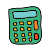
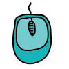
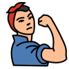
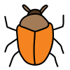
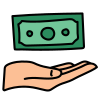
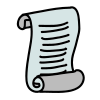

EMMA LÓPEZ
Chicago-born + Roots in México
¡Hola, Mundo! My name is Emma (she/her), and I'm currently a junior Riverside Brookfield High School (RBHS) interested in the intersection of computer science and public policy.
From data science, cybersecurity, to artifical intelligence/machine learning (AI/ML), I'm passionate about how technology can be leveraged to support marginalized communities.
I absolutely love and enjoy reading (The Perks of Being a Wallflower is my absolute favorite), thrifting (go check out my Depop below!), watching rom-coms (my no. 1 is The Holiday), listening to music (especially Fleetwood Mac + The Marías), eating Mexican sweets (mangonadas have a place in my ), and drinking iced matcha lattes with oat milk (literally everyday all day)!
Feel free to email me at
emmavialopez
gmail
com or get in touch with me through one of the social media handles linked at the bottom. Scroll to learn more about me!
Founder @ Chicago Alianza Migrante May 2023—Present
Developing an iOS application that gives Hispanic/Latino migrants the ability to connect with their culture in the local area. Hosting bi-weekly donation drives to support Hispanic/Latino migrants in the Greater Chicago Area.
Instructor @ Mathnasium 
Tutoring students in K-8 mathematical concepts in elementary mathematics, algebra, and geometry.
Educator @ Little League Coding 
Teaching students aged 5-12 Python on a weekly basis for 14 classes throughout 7 weeks.
Ambassador @ GirlCon Dec 2022—Present
Outreaching to the local Chicagoland area about an international conference dedicated to closing the gender gap in STEM.
Researcher + Editor @ iFeminist May 2022—Present

Researching articles about women in history to empower the next generation by exposing youth to unknown and underrepresented women. Editing to ensure articles are quality prior to publication.
Scholar @ Kode With Klossy 
Attended an in-person two-week coding intensive coding boot camp to experiment with data science and AI/ML. Procured final project dedicated to educating about environmental racism by utilzing Python, SQL, and Google Data Studio.
Global Fellow @ Columbia Journal of Science, Technology, Ethics, and Policy Jan 2023—Jul 2023
Mentored by undergraduate students at Columbia University and Barnard College by participating in weekly workshops dedicated to a STEP issue and developed a final project related to the ethics of non-fungible token (NFT) technology.
Captain + Code Lead @ FIRST Tech Challenge (FTC) Team #12982 Sep 2021—Present
Captained the Bionic Bulldogs and led the code team by motivating each team member to triumph during competition season. Leveraged technical prowess and effective communication to foster a collaborative environment, maximizing team potential.
President @ Cybersecurity Club Aug 2022—Present
Initiated meetings and collaborated with Club Sponsors to solidify meeting dates and agendas. Mentored club members by providing them with insights and tips as a National Cyber Scholarship (NCSF) Awardee.
Editor @ The Clarion Jan 2022—Present
Edited and authored articles by communicating ideas with Editor-in-Chief Managing Editors, and Story Editors. Utilized Adobe InDesign to produce hard copy prints of newspaper quartly.
Co-President @ Girls Who Code Dec 2022—Present
Developed meeting slides and agendas by combining ideas with Club Sponsor as well as President. Presented to club members and provided them with professional development opportunities in technology.
Executive Board @ Model United Nations May 2022—Present
Worked alongside additional executive board members to inform club members of upcoming sessions while providing tips when in commitee. Disclosed my experinences in Model United Nations to encourage club members.
National Community Service Ambassador Award @ InnerView Jul 2023
Awarded to students who have dedicated 100+ hours of community service between 2023—2024.
Grant Recipient @ Riverside Brookfield Educational Foundation 
Formed in 1987, a board of trustees distribute yearly grants to students pursuing educational enrichment at institutions over the summer.
Certificate of Recognition @ District 208 Board of Education

May 2023Recognized for achieving Northern Illinois Affiliate Winner at the National Center for Women + Information Technology (NCWIT) and National Cyber Scholarship Scholar at the National Cyber Scholarship Foundation (NCSF).
National Cyber Scholarship Scholar @ NCSF May 2023
Achieved 20,000+ points on CyberStart America, by solving "capture-the-flag" cybersecurity challenges. Awarded $3,000+ towards cybersecurity education to recieve the GIAC (GFACT) certification.
Aspirations in Computing Northern Illinois Affiliate Winner @ NCWIT Feb 2023
Selected by significantly demonstrating a progression in computing experiences and technical skills, leadership in teams, clubs, and teaching peers, and participation in computing-related extracurricular activities.
A Honor Roll @ Riverside Brookfield High School 2021—2023
Maintained above a 4.0 grade-point average (GPA) during each quarter.
HTML, CSS, JavaScript, Java, Python, R, Swift
Website Development, iOS App Development, Cybersecurity, Data Science, AI/ML
Leadership, Computer Science, Communication, Programming, Spanish
Decision-making, Problem-solving, Collaboration, Organization, Multitasking
Made with from Emma Lopez.
Copyright © 2023 Emma Lopez. All rights reserved.